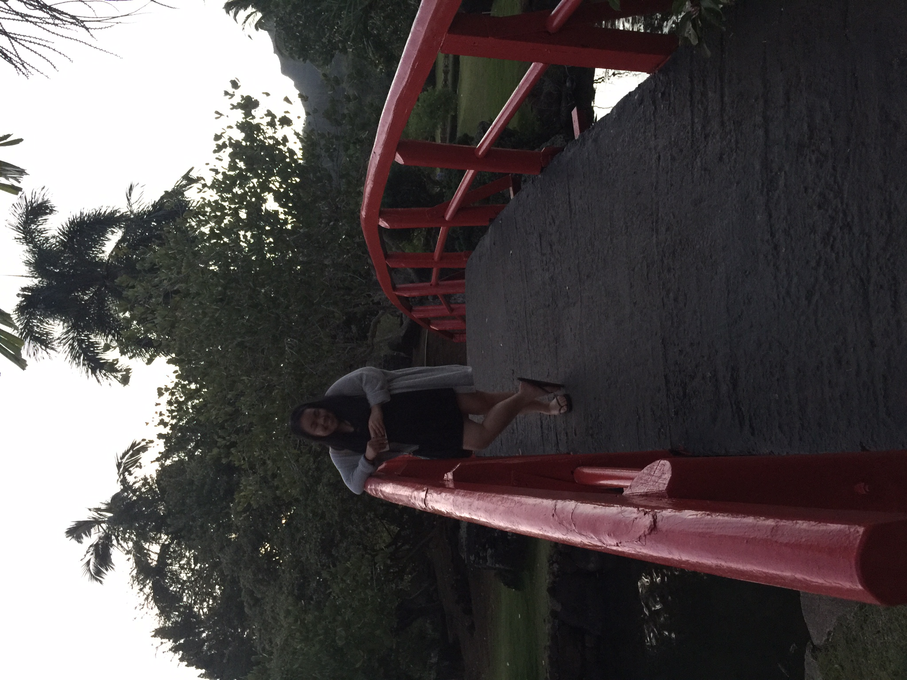

About Koby Wu
About Me

- Short Biography
- I am a 15 year old Chinese-Philipino girl living in Long Beach, California. I will be a junior at Da Vinci Communication High School next year. I am very involved in school being in my school's leadership, National Honor Society secretary, a peer mentor and in a Homeless Assistance Program club. I also have one younger brother but he is actually taller than me ;(
I wanted to attend Girls Who Code to help prepare myself for next year in Computer Science class.
- Fun Facts!!!!
- I hate seafood. I just don't like the smell and the taste. It also may be because I always have wanted to be a marine biologist and care for marine animals.
- I am 4'8.5. Yeah I'm short
- I am a mother to 2 bunnies, Rae a white bunny and her mate Rocky a brown bunny.
- Anaheim Ducks is my hockey team!!!!
- I played soccer for 5 years but changed to volleyball for 2 years.
- My dream jobs are marine biologist or something to do with business and money.
- I love traveling. My favorite place is Kauai, Hawaii or Fiji.
- My favorite website